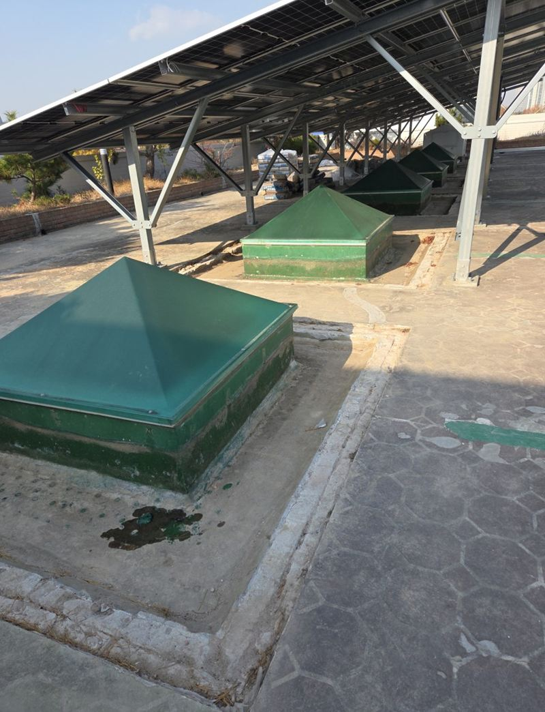
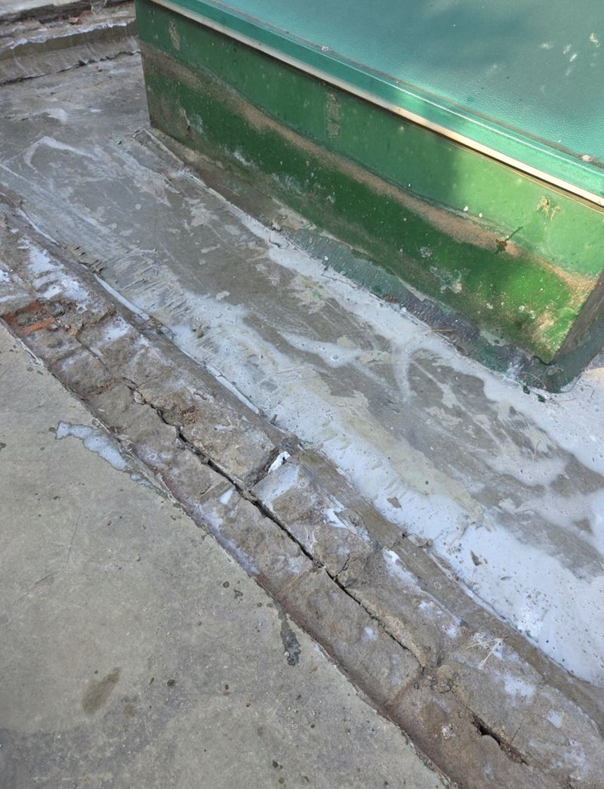
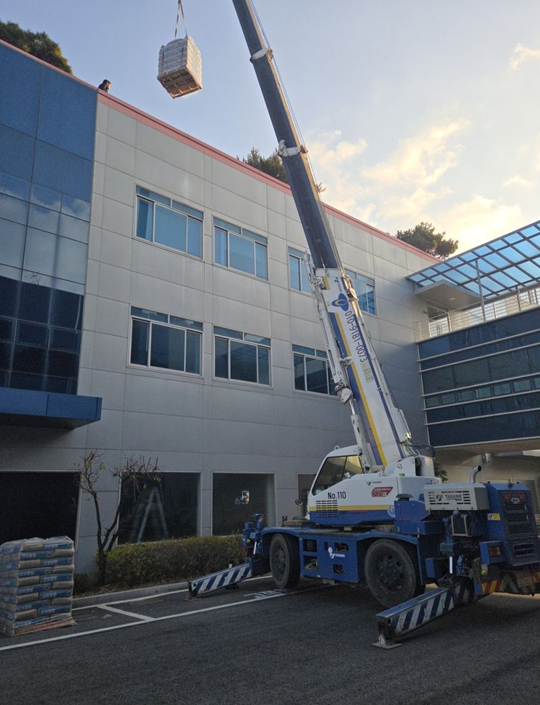
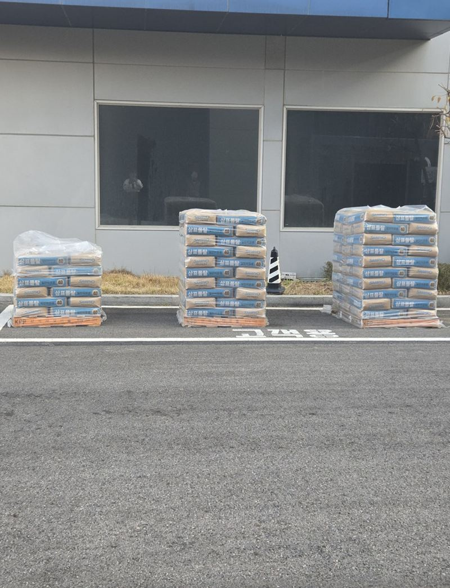
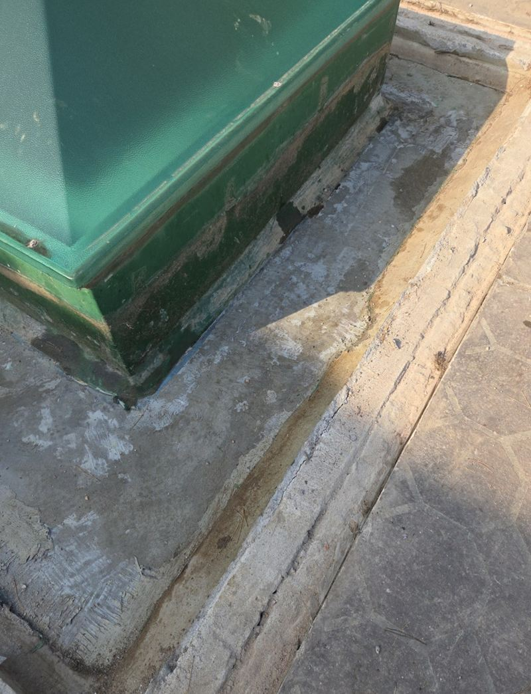
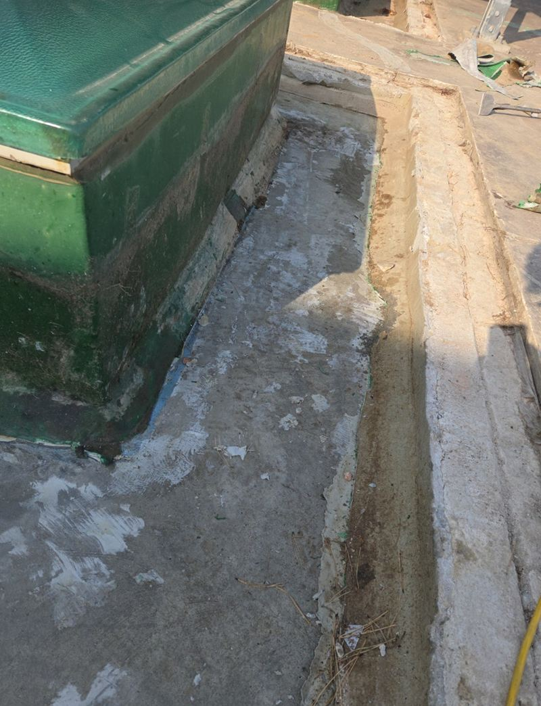
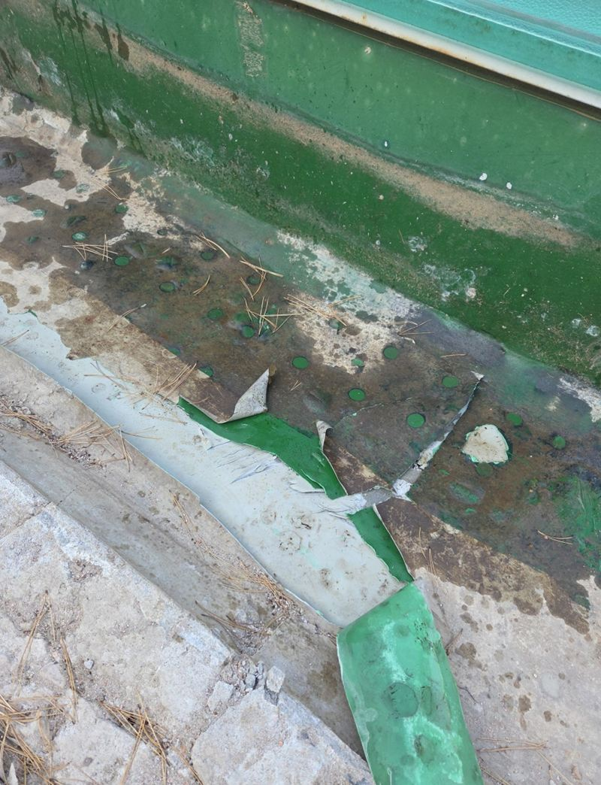
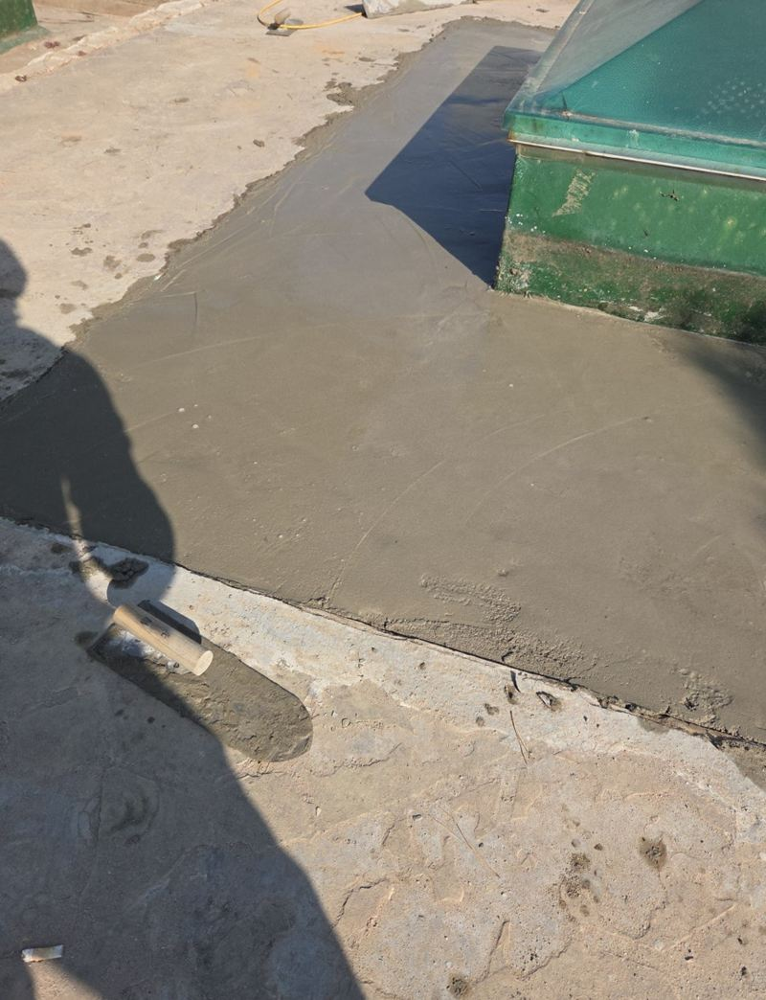

인천 연수구 콘크리트 시멘트 메꿈 작업 비용
← 밀어서 전후 비교 →
옥상에 있던 화단을 걷어 내고 나니 그 자리가 움푹 패고, 모서리마다 높낮이가 달라 걷다가 발이 걸리는 상태였어요. 배수로 주변은 오래된 방수막이 들떠 시멘트가 붙지 않았어요. 옥상 전체를 새로 하지 않고, 문제 구간만 바닥을 다시 만드는 방식으로 정리했어요.
전체 철거 대신 부분 메꿈을 고른 이유
방수층 전체가 망가진 게 아니라 화단 자리와 배수로 둘레만 문제였어요. 이럴 때는 상한 구간만 정리해서 높이를 맞추는 편이 비용과 시간을 아껴요. 대신 새 시멘트가 옛 바닥에 단단히 붙도록 바탕 정리에 시간을 들여야 해요.


옥상까지 시멘트 올리기
건물 옥상까지 엘리베이터가 연결되지 않아 시멘트 포대를 들고 계단으로 나를 수 없었어요. 크레인으로 자재를 끌어올리고, 네 명이 역할을 나눠 반입과 준비를 빠르게 끝냈어요.


붙게 만드는 준비가 절반이에요
-
들뜬 방수막 걷기
벽과 바닥 모서리에 붙어 있던 낡은 방수막을 모두 긁어냈어요. 이게 남아 있으면 그 위 시멘트가 통째로 떨어져요.
-
면갈이로 높이 고르기
바닥 요철을 갈아 내 높낮이를 비슷하게 맞추고, 생긴 분진은 블로어와 물청소로 씻어 냈어요.

-
프라이머 바르기
시멘트를 바로 붓지 않고 접착 프라이머(몰다인)를 먼저 발라 옛 바닥과 새 시멘트가 하나로 붙게 했어요.

-
시멘트 메꿈과 마감
패인 곳부터 채워 단차를 없애고, 배수로 쪽으로 물이 흐르도록 기울기를 살리며 표면을 고르게 펴 발랐어요.


메꿈 작업 비용이 달라지는 지점
- 면적과 단차 깊이깊게 패일수록 들어가는 시멘트 양이 늘어요.
- 바탕 정리 범위들뜬 방수막이 넓으면 걷어 내는 시간이 길어져요.
- 자재 반입 방법엘리베이터가 없으면 크레인 같은 장비와 인원이 더 필요해요.
옥상 바닥, 이럴 때 보수를 생각하세요
- 비 온 뒤 옥상에 물이 며칠씩 고여요바닥이 패여 물길이 막힌 상태예요. 고인 물은 방수층을 빨리 상하게 해요.
- 화단·설비를 걷어 낸 자리가 울퉁불퉁해요이 현장처럼 철거 흔적만 메워 높이를 맞출 수 있어요.
- 시멘트 조각이 떨어져 굴러다녀요표면이 부서지기 시작한 거예요. 배수구를 막기 전에 정리하는 게 좋아요.
- 사람이 자주 다니는 옥상이에요작업자·직원이 오가는 곳이면 걸려 넘어지지 않게 단차부터 없애요.
옥상 바닥 보수 질문
메꿈 후 방수 공사도 따로 해야 하나요?
메꿈은 바닥 높이를 고르는 작업이에요. 누수가 있는 옥상이라면 그 위 방수 공사를 함께 검토하는 게 좋아요.
공장·회사 건물도 하나요?
네, 이 현장도 회사 건물 옥상이었어요. 출입 시간과 자재 반입 경로를 미리 알려주세요.
비 예보가 있으면요?
시멘트가 굳기 전에 비를 맞으면 표면이 상해서 날씨를 보고 일정을 조정해요.
시멘트 메꿈 위에 바로 페인트를 칠해도 되나요?
충분히 굳힌 뒤에 칠해야 들뜨지 않아요. 바닥 도장이나 방수를 함께 계획하신다면 순서를 같이 잡아 드려요.
작업 인원이 많으면 비용이 크게 늘어요?
인원은 면적과 자재 운반 방법에 따라 정해요. 이 현장은 크레인 반입 때문에 네 명이 함께 움직였어요.
공장 바닥도 같은 방식으로 하나요?
지게차나 차량이 다니는 바닥은 더 두껍고 강한 재료를 써야 해서, 쓰임을 듣고 방법을 정해요.
다른 콘크리트·아스팔트 현장
- 은평 주차장 땅꺼짐 구멍 시멘트·아스콘 보수
- 용인 기흥 시멘트 패드 소형 거푸집 설치 방법
- 군포 도로 갈라짐·처짐 복구 공사 방법
- 인천 미추홀 내려앉은 보도블럭 재시공 견적
- 양평 보도블럭 교체 공사 방법과 순서
- 용산 콘크리트 내외벽 균열 방수 페인트 시공 방법
- 천안 매립 콘크리트 패드 설치 방법 · 블로그
- 강서 지하주차장 콘크리트 벽면·천장 복원 방법 · 블로그
- 김포 주차장 맨홀 주변 땅꺼짐 몰탈 보수 방법 · 블로그
- 김포 소형 싱크홀 아스콘 부분 보수 방법 · 블로그
- 군포 주차장 바닥 주차선 도색 비용과 순서 · 블로그
- 서초 아스팔트 콘크리트 꺼짐 보수 공사 방법 · 블로그
옥상 전체와 패인 곳, 배수로 주변을 찍어 보내 주세요.
전화 상담 010-4517-9872